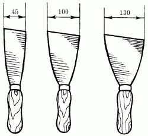
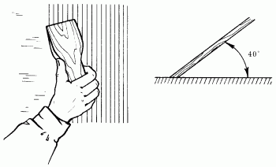
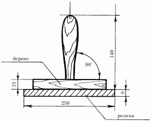
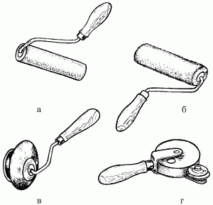
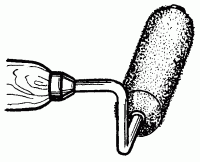
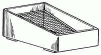

Инструменты.

Для заделки щелей и неровностей, а также устранения других дефектов, обнаруженных на предназначенной для окрашивания поверхности, требуется шпатель, представляющий собой тонкую металлическую, деревянную или резиновую пластину (подложку) с рукояткой из дерева или пластика (рис. 1).

Рис. 1. Различные типы шпателей.
Шпатлевание – процесс, который требует некоторых навыков. В первую очередь необходимо научиться набирать на подложку шпателя требуемое количество шпатлевочного материала. Стоит набрать чуть больше – и лишняя шпатлевка остается на поверхности в виде жирных наплывов, поэтому опытные мастера всегда берут на лопасть своего шпателя точно рассчитанное ее количество.
Первую нижнюю полосу шпатлевки наносят ровным слоем, а верхний остаток с наплывом материала удаляют впоследствии повторным движением. Толщина шпатлевочного слоя зависит от угла наклона инструмента относительно стены: чем меньше наклон, тем более тонко наносится материал (рис. 2).

Рис. 2. Нанесение шпатлевки шпателем.
Сглаживание обработанной поверхности производят обратной стороной шпателя. Сам инструмент прикладывают укороченной стороной к стене под углом 10–15°, после чего движением, противоположным тому, которым наносилась шпатлевка, производят сглаживание обработанной поверхности.
Под клеевые краски шпатлевку также готовят с применением клея. При этом строго нормируют его концентрацию в составе (не более 5 %).
Для работы лучше всего иметь комплект шпателей: одним шпатлевку наносят на стену, другим – полутерком (рис. 3) – производят разглаживание ее по поверхности.

Рис. 3. Шпатель-полутерок.
Гораздо удобнее наносить шпатлевку на стену с помощью пистолета-пульверизатора, благодаря которому процесс будет не таким трудоемким. Однако и в этом случае шпатель все равно потребуется.
Очень часто для получения более гладкой поверхности шпатлевку накладывают несколькими слоями. Последовательность действий при этом такова: сначала накладывают первый слой, затем дают составу просохнуть, поверхность грунтуют и только после этого накладывают второй слой. Таким образом, каждый слой шпатлевки лучше всего накладывать через промежуточные грунтовочные слои.
Когда применяют жидкий состав шпатлевки, ее наносят кистью, затем этой же кистью производят выравнивание. После того как поверхностный слой шпатлевки немного просохнет, с помощью обернутого шкуркой деревянного бруска поверхность шлифуют.
Первоначальную шлифовку лучше всего проводить крупнозернистой шкуркой, а окончательную – наждачной шкуркой средней зернистости.
Еще одно важное замечание. Не торопитесь сразу после шпатлевания наносить краску на стену. Дайте поверхности просохнуть, иначе при нанесении краски шпатлевочный слой, вобрав в себя влагу, может разомкнуться.
Для окрашивания потолков удобно применять малярные валики. Если работать кистью, то процесс окрашивания будет слишком утомителен и займет гораздо больше времени.
Научиться работать валиком можно гораздо быстрее, чем кистью. С помощью валика можно добиться хорошего качества работы даже на плохо подготовленных поверхностях. Главным условием применения валика является то, что окрашиваемая поверхность должна быть ровной и достаточно широкой для этого инструмента. Валики промышленного производства выпускают с рабочей шириной катка от 10 до 30 см.
Валиком не только окрашивают, но и грунтуют поверхности. Грунтовку желательно применять подкрашенную, то есть такого же цвета, как и краска.
Срок службы валиков весьма большой. Валиком из высококачественного меха можно окрасить более 3 км различных поверхностей.
Труднодоступные для валика участки (места сопряжения стен и потолка), так или иначе, придется подкрашивать кистью.
В том случае, если у вас имеются высокие потолки, лучше всего пользоваться валиком с длинной ручкой, который незаменим именно при окраске потолков и пола в труднодоступных местах.
Валик состоит из вращающегося цилиндрического ролика, который обмотан специальным материалом. Ролик вращается по оси, закрепленной на деревянной рукоятке. В комплект к валику входит несколько запасных покрытий, которые можно менять в зависимости от вида выполняемых работ и требований к ним.
В качестве материала для покрытия ролика традиционно применяют коротковорсную шерстяную ткань, но вам может попасться валик с губкой из полимерных материалов, а то и с покрытием из натурального или искусственного меха. Эти материалы способны гораздо лучше удерживать краску.
Материал с коротким ворсом держит краску не так хорошо. Его приходится часто смачивать в краске, отчего она в изобилии появляется на ваших руках или плечах. Все же таким инструментом можно наносить более ровные и гладкие слои краски, нежели валиком с длинным ворсом.
В зависимости от назначения различают следующие основные типы валиков (рис. 4):
– валик с пенопластовым покрытием (ВП). Используется для окрашивания водными составами;
– валик меховой универсальный (ВМУ). Применяется главным образом для нанесения лакокрасочных составов в углах окрашиваемых поверхностей. Меховым покрытием обтягивают не только ролик, но и его торцовую сторону;
– валик с покрытием из меха (ВМ). Предназначен для нанесения лаков и красок;
– филеночный валик.

Рис. 4. Основные типы валиков: а – с пенопластовым покрытием; б – меховой универсальный; в – с покрытием из меха; г – филеночный валик.
Кроме всех перечисленных типов, выпускается много других разновидностей малярных валиков. Например, филенчатые валики для вытягивания филенок, декоративные накатные валики с коротким синтетическим ворсом (рис. 5), рельефными рисунками или узорами для художественного оформления окрашиваемых поверхностей.

Рис. 5. Валик с коротким синтетическим ворсом.
В комплект поставки валика может входить ванночка с отжимной решеткой (рис. 6).

Рис. 6. Емкость с отжимной решеткой.
Благодаря использованию этой ванночки можно значительно сократить расход краски.
В качестве рабочей сетки используют лист железа или кусок фанеры с просверленными на небольшом расстоянии друг от друга отверстиями.
Перед тем как приступить к работе, валик аккуратно смачивают в краске и отжимают, несколько раз с нажимом проводя им по решетке ванночки, до тех пор пока с катка валика не перестанет стекать краска. После этого инструмент приставляют к окрашиваемой поверхности и проводят им полосу краски по одному и тому же месту, но в противоположных направлениях.
По мере расхода краски в рабочем покрытии валика давление на него и интенсивность прокатки следует увеличивать.
Стандартный способ окраски валиком предусматривает многократное прокатывание валика по окрашиваемой поверхности так, чтобы при этом каждый предыдущий ее участок перекрывался катком примерно на 3–5 см. По окончании работы валик обрабатывают так же, как малярные кисти. Очистку его начинают с удаления остатков краски из покрытия катка растворителем (бензином или ацетоном), после чего валик промывают в мыльной воде, сушат и хранят в сухом прохладном месте.
Маховые кисти выпускают в основном больших размеров – диаметром 60 и 65 мм, с длиной волоса 100 мм. У хорошей кисти при сгибании волос должен немедленно выпрямляться, не оставляя видимой кривизны.
Кисти в виде пучка волос, которые требуют специальной вязки, называются весовыми, кисти в патроне с ручкой – штучными. Весовые кисти после подвязки крепким шпагатом насаживают на длинную ручку-штырек.
Любую кисть подвязывают, потому что длинный волос плохо растушевывает краску и создает много потеков. Поэтому маляры-профессионалы считают, что для клеевой окраски неподвязанный волос должен быть длиной 7–9 см.
Побелочные кисти имеют ширину 200 мм, толщину – 45–60 мм, длину волоса – 100 мм. Эта кисть в 2,5 раза производительнее маховой и позволяет получить более чистое окрашивание.
Макловицы иногда применяют вместо побелочной кисти, изготовляют из полухребтовой щетины с 50 % конского волоса. По форме они бывают круглыми (диаметром 120 и 170 мм, длиной щетины 94–100 мм) или прямоугольные. Ручку макловиц крепят в середине колодки или делают съемной на винтах. Работу макловицей выполняют со стремянки или с пола. Макловицы и побелочные кисти рекомендуется применять при клеевых и казеиновых окрасках. Обычная окраска, выполненная побелочными кистями или макловицами, не требует флейцевания.
Ручники имеют небольшой размер, их насаживают на короткую деревянную ручку. Изготовляют из чистой щетины, а также с добавкой конского волоса.
Они бывают диаметром 26, 30, 35, 40, 45, 50, 54 мм. Ручники подвязывают шпагатом, который по мере износа кисти перемещают, увеличивая длину волоса. Длина оставшегося волоса должна быть не более 30–40 мм.
Применяют ручники для окрашивания клеевой и масляной красками небольших поверхностей. Ручники из мягкой щетины, закрепленной в металлических кольцах, пригодны для любых работ. Если щетина закреплена с помощью клея, то кисти не следует применять для окрашивания клеевыми и известковыми составами.
Флейцы – плоские кисти шириной 25, 60, 62, 76 и 100 мм, изготовленные из высококачественной щетины или из барсучьего волоса, закрепляемого в металлической оправе, надетой на короткую деревянную ручку. Применяют флейцы в основном для сглаживания свеженанесенной краски, то есть для уничтожения следов от маховой кисти или ручников. Флейцы можно применять и для окрашивания.
Филеночные кисти выпускают диаметром от 6 до 18 мм и изготовляют из белой жесткой щетины, закрепленной в металлической оправе-патроне.
Патроны крепят на деревянных ручках различной длины. Такие кисти предназначены для вытягивания узких полос, называемых филенками, или для окраски таких мест, куда не проходит ручник.
Чтобы уменьшить износ волоса кисти, следует соблюдать следующие условия. Во время работы кисть необходимо периодически вращать в руках, что обеспечивает равномерный износ волоса или щетины по всей окружности кисти.
Если этого не делать, она срабатывается (изнашивается) с одной или двух сторон.
Нажим на кисть должен быть такой силы, чтобы краска хорошо втиралась в поверхность, но волос истирался как можно меньше. Чем глаже поверхность, тем меньше изнашивается кисть.
Правильный уход за кистями в процессе работы повышает их долговечность.
Если делают кратковременный перерыв в работе масляными красками, кисти следует опустить в ведро с водой, керосином или скипидаром.
Можно держать их в той же краске, которой выполняют окрашивание, или в олифе, но в подвешенном состоянии, так чтобы они не касались волосом дна посуды.
Подвешивают кисти для того, чтобы они своей тяжестью не давили на волос.
От давления он изгибается и в дальнейшем не расправляется, принимая уродливую, малопригодную для работы форму. Для подвешивания в ручках кистей сверлят специальные отверстия, завязывают шпагат, подвешивая кисть на крючок или гвоздь.
Кисти с волосом в деревянных оправах не следует опускать в воду, потому что дерево набухает, клей размокает и волос из кисти вылезает.
После окончания работ кисти тщательно моют сначала в керосине, скипидаре или уайт-спирите, чтобы удалить масло и краску, а затем промывают в мыльной воде. Моют до тех пор, пока вода не будет окрашиваться. После этого кисти снова промывают чистой водой.
Особенно тщательно ухаживают за торцовками и флейцами. Их следует мыть не только после каждого дня работы, но даже во время обеденного перерыва.
Клеевые краски легко смываются в чистой воде, лучше в теплой или горячей.
После мытья кисти отжимают, придают им форму факела и подвешивают волосом вниз. Если волос расходится, то его связывают марлей. После окраски клеевыми красками кисти рекомендуется мыть каждый день. Временно подвязанные кисти после работы масляными красками следует развязать и тщательно промыть. Если этого не сделать, то краска засохнет под подвязкой и кисть станет непригодной для работы.
Сухой волос и жесткая щетина оставляют на поверхности грубые полосы, снижающие чистоту окраски. Поэтому кисти следует особенно тщательно готовить к работе. Новые кисти надо опустить примерно на 1 час в воду – волос и щетина размягчаются, набухают, увеличиваются в объеме и не выпадают во время окраски. Мягкие волос и щетина кладут краску ровнее и чище.
Но даже подготовленные таким образом кисти могут оставлять полосы, образуемые отдельно выступающими волосками. В этом случае кисти необходимо подровнять, то есть поработать ими 10–20 минут на грубой штукатурке, бетоне или кирпиче, смочив их в воде или краске. Выравнивать кисти путем обжигания не рекомендуется, так как при этом может сгореть наиболее ценная часть щетины – флажки.
По мере использования маховых кистей волос истирается и становится короче, работать ими менее удобно. Тогда подвязанную часть кисти немного отпускают, то есть развязывают шпагат, освобождая волос на нужную длину. При этом не следует сильно ослаблять шпагат, чтобы не допустить выпадения волос.
Кисть опускают в окрасочный состав только неподвязанной частью волоса, излишки отжимают о края посуды. Кистью надо работать так, чтобы краска ложилась ровными, тонкими слоями.
Если нажимать на кисть во время работы слабо, то краска ложится узкими полосами, часто толстым слоем. При сильном нажиме на кисть краска стекает, образуя потеки, но ложится тонким слоем. Поэтому надо сначала на кисть делать небольшой нажим, а по мере расходования краски нажим увеличивать.
Во время окрашивания кисть следует держать перпендикулярно или с небольшим наклоном к окрашиваемой поверхности.
При окрашивании маховой кистью краску можно наносить как горизонтальными штрихами, так и вертикальными, хорошо их растушевывая.
Лучше всего работу вести следующим образом. Окрашивая стены, краску наносят сперва горизонтальными штрихами, а затем вертикальными ее дополнительно растушевывают.
В этом случае лучше всего работать вдвоем: один наносит краску горизонтальными штрихами, второй идет за ним и тут же растушевывает ее вертикальными.
Краску, нанесенную кистями, можно выравнивать, как бы припудривая тонким слоем краски с помощью краскопульта или пульверизатора пылесоса.
Перед тем как приступить к работе, ручники необходимо подвязать, оставив длину волоса примерно на 4–5 см, затем хорошо перемешать краску веселкой или палкой.
Краску набирают небольшими порциями, погружая в нее кисть на 1–2 см. Избыток краски отжимают о мешалку или край посуды.
Краску наносят широкими ровными мазками. Сначала растушевку ведут в одном, затем в другом направлении.
Принятый порядок растушевки следует соблюдать до окончания окраски одного помещения.
Во время работы краску тщательно растушевывают кистью, штрихи наносят как можно тоньше, чем добиваются втирания ее в поры поверхности и лучшего сцепления с грунтом.
Качественно окрашенную поверхность можно получить только в том случае, если окраску производят не менее 2–3 раз. При этом следует знать, что первый слой растушевывают в том же направлении, что и последний.